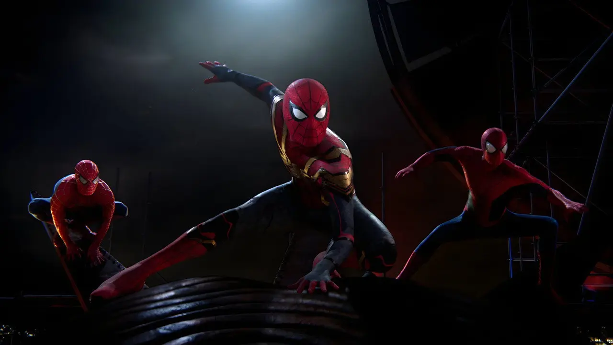

Legado e influencia
Antes de que existieran los grandes universos cinematográficos, la trilogía de Raimi demostró que una película de superhéroes podía ser un éxito masivo y, al mismo tiempo, una historia emotiva y personal.
Lo que cambió en el género
En 2002, las películas de superhéroes todavía eran una apuesta. Spider-Man fue la primera en superar los 100 millones de dólares en su primer fin de semana y, junto con X-Men (2000), convenció a los estudios de que los cómics podían sostener grandes franquicias.
Pero su influencia va más allá de la taquilla. La trilogía instaló ideas que el género repite hasta hoy:
- Contar el origen del héroe con tiempo, dejando que el público lo conozca antes de verlo en acción.
- Villanos con motivos comprensibles, que podrían haber sido buenas personas.
- Un protagonista con problemas cotidianos: pagar el alquiler, llegar a horario, sostener una relación.
- Escenas de acción construidas alrededor de una decisión moral, como el puente o el tren.
Tres Spider-Man, tres miradas
Después de Tobey Maguire, el personaje tuvo dos nuevas versiones en el cine. Cada una refleja una época distinta.
| Actor | Años | Películas propias | Recaudación mundial | Tono |
|---|---|---|---|---|
| Tobey Maguire | 2002–2007 | 3 | 2509 millones | Clásico y sincero, cercano al melodrama. |
| Andrew Garfield | 2012–2014 | 2 | 1467 millones | Más moderno y romántico, con un Peter rebelde y ocurrente. |
| Tom Holland | 2017–2021 | 3 | 3918 millones | Adolescente y liviano, parte del Universo Cinematográfico de Marvel. |
| Montos en dólares, aproximados y sin ajustar por inflación. Para Holland se cuentan sus tres películas propias hasta No Way Home (2021), sin sus apariciones en otras películas de Marvel. | ||||
El regreso en No Way Home

En 2021, catorce años después de Spider-Man 3, Tobey Maguire volvió a ponerse el traje en Spider-Man: No Way Home, junto a Andrew Garfield y Tom Holland. Con él regresaron también Willem Dafoe como el Duende Verde, Alfred Molina como el Doctor Octopus y Thomas Haden Church como el Hombre de Arena.
La reacción del público en los cines, con aplausos y gritos en cada aparición, mostró hasta qué punto la versión de Raimi seguía viva para varias generaciones. La película recaudó cerca de 1900 millones de dólares, la cifra más alta de toda la historia del personaje.
De la pantalla a los memes
Pocas sagas generaron tantos memes como esta. Muchos nacieron de escenas que en su momento parecían exageradas y que hoy los fans celebran como parte del encanto de la trilogía:
- El Peter "malo" de Spider-Man 3, peinado hacia adelante y bailando por la calle.
- La carcajada de J. Jonah Jameson, un personaje tan querido que J. K. Simmons volvió a interpretarlo en las películas de Tom Holland.
- "¡Es hora de la pizza!", el grito de Peter repartiendo pizzas en Spider-Man 2.
- "Yo también soy algo así como un científico", la frase de Norman Osborn en la primera película.